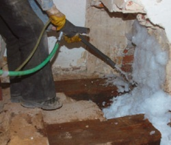

- Nitril
- Polychloropren
Partikelfilter P2
Arbeitskleidung
- Nitril
- Polychloropren
Korbbrille
Partikelfilter P2
Arbeitskleidung
- Nitril
- Polychloropren
Gestellbrille
bei Auftreten von Aerosolen Partikelfilter P2
Arbeitskleidung

Wasserlösliche Holzschutzmittel, die bei Zugabe eines Schaumbildners mit Hilfe von Druckluft verschäumt werden können, werden als Schaum auf das Holz aufgebracht. Das Verfahren wird eingesetzt, um größere Wirkstoffmengen aufzutragen und die Einwirkzeit zu verlängern.
Technische Schutzmaßnahmen
Die Arbeiten müssen in gut belüfteten Räumen durchgeführt werden.
Persönliche Schutzausrüstungen
|
|
|
|
|
| Holzschutzmittel | Handschutz | Augenschutz | Atemschutz | Körperschutz |
| Wasserbasierte Bor-haltige Holzschutzmittel | Bei andauerndem Hautkontakt:
|
Gestellbrille | Im Allgemeinen nicht erforderlich; bei Auftreten von Aerosolen Partikelfilter P2 |
Im Allgemeinen nicht erforderlich; Arbeitskleidung |
| Wasserbasierte Quat-Bor-Präparate |
|
Bei Spritzgefahr: Korbbrille |
Im Allgemeinen nicht erforderlich; bei Auftreten von Aerosolen Partikelfilter P2 |
Im Allgemeinen nicht erforderlich; Arbeitskleidung |
| Wässrige Holzschutzmittel mit organischen Wirkstoffen |
|
Bei Spritzgefahr: Gestellbrille |
Im Allgemeinen nicht erforderlich; bei Auftreten von Aerosolen Partikelfilter P2 |
Im Allgemeinen nicht erforderlich; Arbeitskleidung |
Die Handschuh-Datenbank von GISBAU (www.gisbau.de) enthält Schutzhandschuh-Empfehlungen von verschiedenen Handschuh-Herstellern für die Holzschutzmittel-Produktgruppen.
Es werden Handschuhfabrikate mit Tragedauern für den Spritzkontakt (z.B. Streichen) und den Dauerkontakt (z.B. Spritzen) angegeben.
Auf unbedeckte Körperteile sollten Hautschutzmittel aufgetragen werden.
Nach der Arbeit und vor längeren Arbeitspausen sollten die Hände gereinigt und Hautpflegemittel aufgetragen werden.